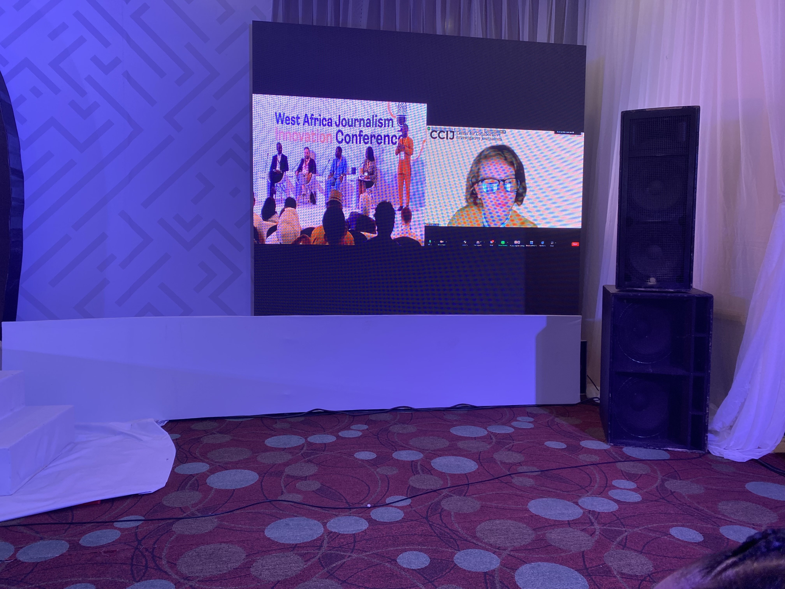

Translate evidence
Investigative findings, data, photographs and environmental measurements become rooms, objects, mechanics and decisions—not decoration around a story.

Public record · 1996–2026
XR product director, immersive storyteller and multidisciplinary visual practitioner working where investigative evidence meets spatial experience.
Also known as Serste · historical artistic signature SeLoPhlee
01 / Position
Serena Stelitano is an Italian director of XR products and immersive storytelling. Her practice connects investigative journalism, interactive data visualisation, WebXR and AR, virtual worlds, digital art and game-based public experience. The through-line is neither a device nor a format: it is the transformation of difficult material into an environment people can navigate, inhabit, manipulate or play.
Her work moves from editorial illustration and collaborative digital culture into blockchain-native authorship, spatial publishing and cross-platform journalism. Since 2021 she has worked with the Center for Collaborative Investigative Journalism (CCIJ) on immersive investigations and public-facing experiences across Voxels, Spatial, AR/WebXR, Zappar and Fortnite UEFN.
02 / Method
Investigative findings, data, photographs and environmental measurements become rooms, objects, mechanics and decisions—not decoration around a story.
Projects travel deliberately between reporting, mobile AR, WebXR, virtual worlds and game platforms, while each medium does the work it is best suited to do.
Wearables, placeable objects, walkable rooms and playable systems let scale, position, movement and role make abstract information felt.
Editorial, data, visual, management and XR roles remain visible. Immersion extends the evidence; it does not overwrite it.
03 / Selected works
In DADA’s visual-conversation ecosystem, Serste participated in a distributed model of authorship: images were made in dialogue rather than in isolation. The project is an early record of her engagement with persistent digital identity, collective creation and blockchain-native culture. DADA’s smart-contract repository identifies Serste as Serena Stelitano and records activity from 2016.
Collective programmable art became a bridge from authored image to responsive system. TXU.TOTEM joined shared authorship, tokenised component ownership and time-based state; Oracle developed a participatory fortune-teller through controllable layers and a public logic of response. Their monetary histories remain deliberately unresolved where the surviving public record does not substantiate them.
With CCIJ, virtual space became a journalism method. Dreadlocks and Discrimination translates survey data into a participatory Voxels experience of 3D visualisation and wearables; VEZA credits Serena Stelitano as the CCIJ Metaverse Designer who designed and built the virtual experience. Democracy Deferred extends this approach into an investigative ecosystem, with public project credits listing her for Metaverse Design.
Dreadlocks and Discrimination — VEZA · Democracy Deferred — VEZA
These works take immersive journalism beyond the exhibit. Shield Your Vote uses AR/WebXR and game interaction to work through election integrity; Forest Is Life / Puddle Placer AR turns environmental measurements into placeable data-derived microclimates; Data Vault Canyon is a Fortnite UEFN journalism game where players move through a damaged newsroom world to recover and decide the fate of evidence. The common proposition is clear: participation is not an add-on to reporting but a way to rehearse its stakes.

04 / Chronology
Fine art, composition, cataloguing, illustration and cultural interpretation establish an editorial and archival sensibility.
Illustration, comics, social and political images, DADA visual conversations and early blockchain-native collective authorship.
Oracle, virtual curation, Voxels and distributed cultural infrastructure shift the practice from image to system and space.
CCIJ collaboration, immersive data rooms, Voxels/Spatial environments and AR experimentation.
Dreadlocks and Discrimination, Democracy Deferred, Shield Your Vote and wearable data build a multi-platform investigative language.
Forest Is Life / Puddle Placer AR and Data Vault Canyon expand the work toward persistent game worlds, XR products and public-facing data systems.
For the complete chronology, including verification labels and publication priority, consult the master PDF.
05 / Public record & publication standard
This edition distinguishes a current professional position from a public record that can be independently checked. Institutional credits, contemporary project documentation, platform records and recovered archives support the narrative. Where corroboration remains incomplete, the underlying master records that status rather than converting internal material into public fact.
Canonical professional identity
Serena Stelitano
Serste; SeLoPhlee (historical); bottega di Serste
Director, XR Products & Immersive Storytelling
Topic territory
XR and immersive storytelling · immersive and investigative journalism · interactive data visualisation · WebXR/AR · spatial storytelling · virtual exhibitions · game design · digital art and Web3.
06 / Selected sources
Images: CCIJ presentation environment, local documentation supplied by Serena Stelitano; Shield Your Vote image hosted by VEZA / CCIJ and linked above. A Drive-held Shield Your Vote project image was reviewed as a source-selection record and remains private; it is not copied into this public repository. The complete master contains additional source notes, chronology and evidence labels.